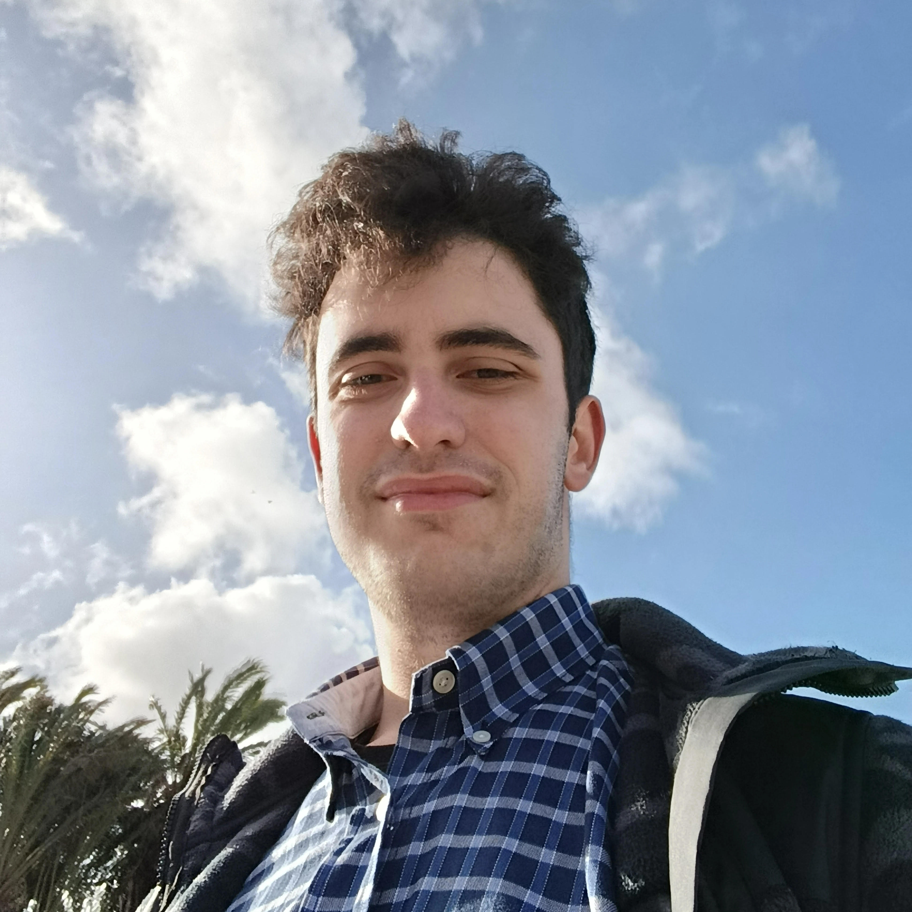

Entrei para as redes sociais por volta de 2018, quando tinha os meus 10 anos. Nessa altura criei a minha
primeira conta de Instagram, e YouTube, que foi quando tive o meu primeiro
tablet. A partir daí criei muitas e muitas mais, sem saber bem o motivo em concreto. Mantive-me
assim durante alguns anos até em 2021/2022, com a pandemia, fechado em casa, comecei a criar contas,
noutras contas, como por exemplo no
Em 2025, mais ou menos, após ter perdido o meu tio, (o que fez com que ainda me
'afundasse' mais nas redes) comecei a ser acompanhado por uma psicóloga, o que já foi um despertar, mas
foi mais no final de 2025 quando estive a fazer a reflexão não só desse mesmo ano, mas também dos anos
anteriores que pensei...: "Porquê é que ainda me estou a magooar e a destruir o meu cérebro com
dopamina barata?". Foi então que tomei a iniciativa, e não desativei, mas sim apaguei todas as
minhas redes sociais, mantendo apenas e só o Instagram pessoal (que é um perfil fechado), e o perfil profissional, que está num outro telefone que fica em casa, que caso
queira partilhar algo, apenas o faço por lá. Junto mantenho apenas o meu LinkedIn>, apenas para oportunidades profissionais, que apenas o
utilizo no computador, e o YouTube para aprender coisas novas. Juntamente apaguei totalmente o
meu telefone pessoal da internet e manti apenas e só público o meu outro número que +e o meu
número pessoal, +351 933 338 431, junto do meu e-mail profissional, makynetastudios@gmail.com.
Com esta jornada,
sinto que é possível ser mais offline e ser feliz ao mesmo tempo, o que muitas pessoas pensam
que é impossível, devo às redes sociais e ao avanço da inteligência artificial. A todos/as que chegaram
atéaqui convido, a ficarem pelo menos uma semana sem redes sociais, mantendo apenas o WhatsApp,
e o YouTube, para verem que sim, é possível vivermos no offline! 😉
Pessoal
6 minutos de leitua
Porque Saí Das Redes Sociais?
Neste artigo verá o real motivo de eu, Tomás Mota, ter decidido sair das redes sociais.

Tomás Mota
24 de Janeiro de 2026